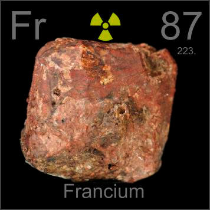

HOME
PREVIOUS
NEXT

Francium
Atomic Weight: 223[note]
Density: N/A
Melting Point: N/A
Boiling Point: N/A
Uranium and thorium minerals produce francium in vanishingly small quantities via their natural radioisotope decay chains. At most a few atoms at a time exist in a rock like this, and you can't see any of them.